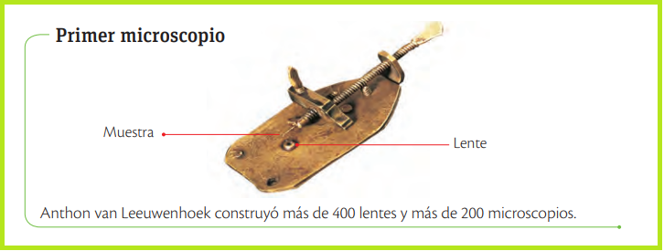
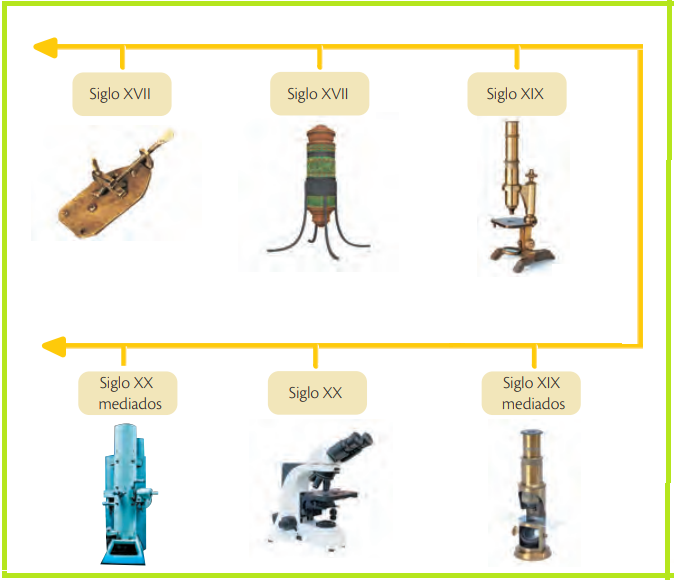
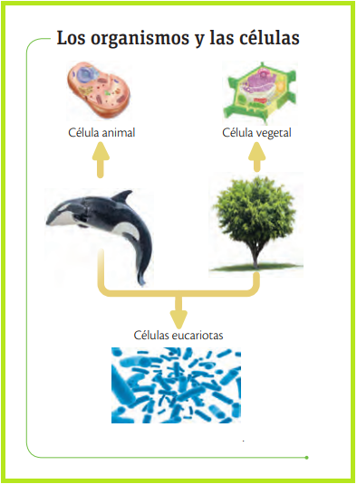

La célula es la unidad básica y común de todos los seres vivos. Para su estudio, se desarrollaron los microscopios, evolucionando desde los lentes simples de los monjes y los Janssen, hasta el microscopio compuesto de Robert Hooke (quien acuñó el término "célula") y las precisas observaciones de Leeuwenhoek sobre bacterias y glóbulos rojos. Biológicamente, la materia se organiza desde el átomo hasta la biosfera, pasando por niveles como tejidos, órganos, poblaciones y ecosistemas, donde cada nivel presenta propiedades emergentes fruto de la interacción de sus partes.

La vida se organiza en niveles de complejidad, desde el átomo y la célula (unidad básica) hasta la biosfera, donde cada nivel presenta propiedades emergentes por la interacción de sus partes. El estudio de estos niveles fue posible gracias a la evolución del microscopio, desde el compuesto de Robert Hooke, quien nombró a las células, hasta el electrónico del siglo XX, que logra 100 mil aumentos y visión en 3D. Estos avances permitieron describir bacterias, virus y el ADN, revolucionando la medicina con el hallazgo de curas y transformando la criminalística mediante el análisis genético para resolver crímenes.

En el siglo XIX y con mejores microscopios, los científicos alemanes Mathias Schleiden (1804-1881), Theodor Schwann (1810-1882) y Rudolf Virchow (1821- 1902) realizaron observaciones interesantes en plantas y animales que los llevaron a establecer la teoría celular; sus conclusiones son:
Todos los organismos, tanto los más simples como los complejos, están formados por una o más células que varían en forma y tamaño.
En el interior de la célula ocurren todas las reacciones necesarias para el mantenimiento de la vida. Las células se especializan para cumplir variadas tareas en el organismo.
La célula es la unidad de origen de los seres vivos. Las nuevas células adquieren la capacidad de cumplir con las mismas funciones de la célula original.
